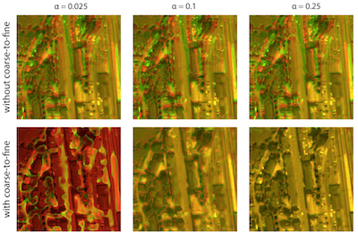
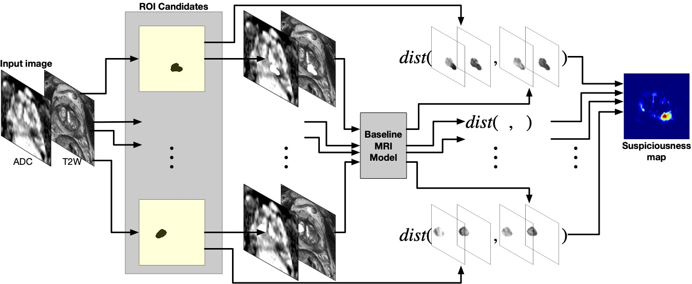

Ruiming Cao
Research Scientist at Adobe
I am a Research Scientist at Adobe's NextCam team led by Marc Levoy. I obtained my Ph.D. from UC Berkeley, where I was advised by Laura Waller and supported, in part, by the Siebel Scholarship. I was also affiliated with the Berkeley Artificial Intelligence Research (BAIR). Previously, I was a research intern at Google Research (2021) and an optical scientist intern at Meta Reality Labs Research (2022).
I received my M.S. in Computer Science from UCLA in 2019, advised by Kyung Hyun Sung and Fabien Scalzo. I received my B.S. in Computer Science and Applied Mathematics from UCLA, working with Song-Chun Zhu.
My research focuses on motion modeling and dynamic imaging. I jointly develop optical system hardware and computational methods to enhance our capabilities for observing and analyzing fast and complex dynamics. I work on various image modalities, including digital photography, optical microscopy, medical imaging, and most recently cryo-ET.

Selected Publications







Teaching
- UC Berkeley - BIOENG 101: Instrumentation in Biology and Medicine - Spring 2022 (GSI)
- UCLA - CS 174A: Introduction to Computer Graphics - Fall 2017
- UCLA - CS 32: Introduction to Computer Science II - Winter 2018, Spring 2018